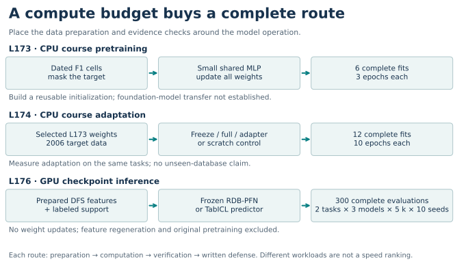
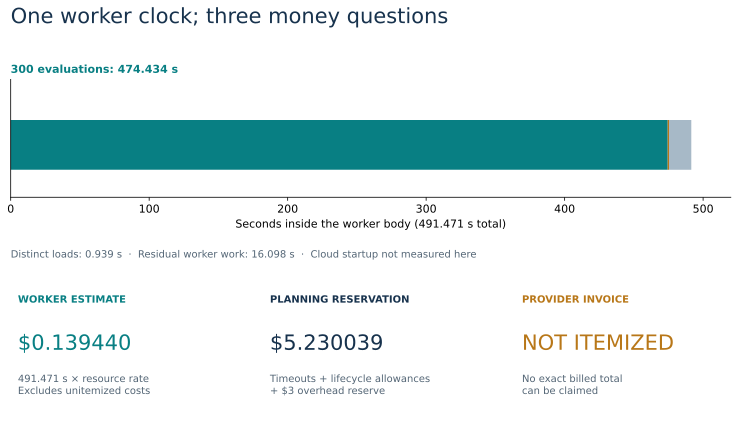
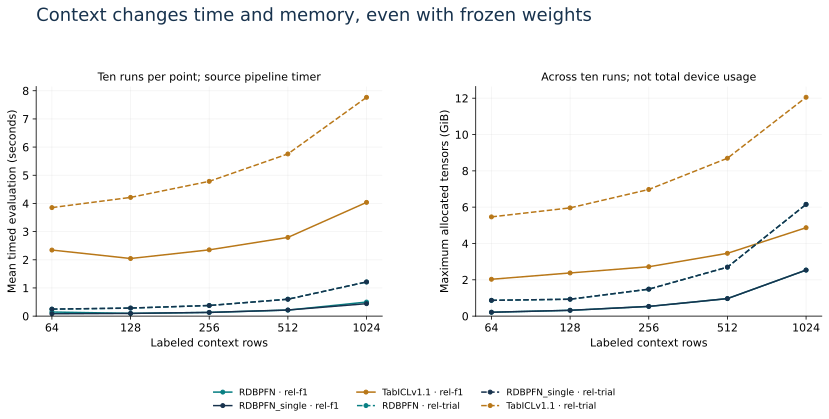

Year 5 · Quarter 2 · Lesson 177
Compute budget realism
Your win: write a feasibility ledger that can reject an unaffordable experiment before it starts—and explain exactly what an affordable run would establish. Allow 15 minutes for the lesson, then use the rest of your session for the notebook.
In lesson 176, you measured what more labeled context buys. The missing question is whether you can afford the whole protocol: every model, seed and context, plus preparation, verification and failed attempts. That question connects your mission to a feasible Year 6 research project.
Prerequisites: distinguish pretraining from adaptation (173, 174); recall why the cheap RT audit stopped in 175. You only need multiplication, units and the idea of a timer inside another timer.
1 · What work are you buying?¶
Pretraining changes shared weights across many tasks. Fine-tuning changes parameters for a selected target setting. In-context prediction uses labeled support with fixed pretrained weights, but still pays for relational features, preprocessing, loading and prediction. RDBLearn §3 illustrates the featurization-plus-ICL route; the L176 TabICL comparator is a different pipeline and does not reproduce RDBLearn.


A released checkpoint lets you reuse someone else's pretraining investment. It does not make that investment zero. Likewise, our small CPU pretraining exercise is affordable because of its explicit model and data scope; it does not establish the cost of pretraining a foundation model. “Pretraining ≫ fine-tuning ≫ ICL” is a planning intuition, not a universal measured ordering. Compare complete protocols on the same task before claiming an efficiency advantage.
2 · Put boundaries around every number¶
| Evidence | Work completed | Recorded time | What it supports |
|---|---|---|---|
| L173 · local CPU | Six small-model pretraining fits | 51.837 s group; 188.416 s all local commands | Course masked-cell objective; no per-fit timer |
| L174 · local CPU | Twelve adaptation/control fits | 19.566 s sum of fits; 107.588 s all local commands | Four adaptation policies on the course tasks |
| L176 · L4 GPU | All 300 checkpoint evaluations | 491.471 s worker bodies | Two tasks, three models, five context sizes, ten seeds |
| L175 · cloud CPU | Three reserved audit attempts; stopped before GPU inference | 7.641 s in two receipts; first attempt missing | Failed/stopped work still consumes reservations |
These are different workloads and machines. The table describes achieved capabilities; its seconds are not a speed leaderboard. L173 lacks individual fit timers. L174 times each fit including evaluation and serialization. The local-command totals also include preparation, audits, failures and notebook validation; their enclosing timers must not be added again to the fit totals. See the complete ledger and timer source.
For L176, the worker body took 491.471 seconds on one L4. Within it, the 300 evaluation timers total 474.434 seconds. The model-load field is repeated in each receipt: adding all copies gives 23.896 seconds, but there were only 12 distinct task/model/phase loads, totaling 0.939 seconds. The remaining 16.098 seconds is residual worker work. It is not measured cloud startup time.


The posted resource-rate calculation is:
L4 + 2 physical CPU cores + 16 GiB host RAM
= 0.000222 + 2 × 0.0000131 + 16 × 0.00000222
= $0.00028372 per second
Worker estimate = 491.470908 × rate = $0.139440
Reservation = $3 overhead + (600 + 30 + 7,200 + 30) × rate
= $5.230039
The reservation holds money for timeouts and overhead, including unsuccessful attempts. Do not add the worker estimate to it: that estimate describes work already covered by the reservation. An invoice is a third quantity. L176's remains NOT_ITEMIZED. Modal pricing also bills loading and idle container time, and meters CPU/RAM at the greater of requested or used resources. These are historical planning reservations, not provider-enforced invoice ceilings.
Memory is another boundary. The largest L176 PyTorch allocation was 12.052 GiB. That is allocated tensor memory on the device, not total GPU usage or 16 GiB host RAM. Cached allocations, libraries and other device use can differ. A successful run on the configured L4 is evidence about that run; it does not prove an arbitrary 12 GiB device will fit. See the pinned PyTorch implementation.


3 · Forecast before you know the result¶
The historical L176 pilot used six runs at k=1,024. Its slowest evaluation took 8.020519 seconds. Before dispatching the other 294 runs, the declared heuristic was:
294 × slowest pilot × 3 + pilot worker duration
= 294 × 8.020519 × 3 + 27.568350
= 7,101.666 seconds ≈ 118.4 minutes
This fit the 7,200-second main timeout and the $8 planned spending stop, leaving $2 of the $10 cap protected. The threefold margin is a heuristic, not a confidence interval. The pilot cannot guarantee runtime at unseen context sizes, on another GPU or with new feature construction. Retain the original forecast even when execution turns out much faster.
def forecast_seconds(pilot_seconds, remaining_runs, margin, fixed_seconds):
"""Serial planning heuristic, not a statistical upper confidence bound."""
import math
values=list(pilot_seconds)
if not values or type(remaining_runs) is not int or remaining_runs<0:
raise ValueError('Need a nonempty pilot and an integer remaining count')
for v in values+[margin,fixed_seconds]:
if isinstance(v,bool) or not isinstance(v,(int,float)) or not math.isfinite(v) or v<0:
raise ValueError('Invalid forecast input')
if margin<1:raise ValueError('Margin must be at least one')
return max(values)*remaining_runs*margin+fixed_seconds
Parallelism changes two clocks. Four one-hour jobs on four GPUs can take roughly one elapsed hour while consuming four GPU-hours. They may also require more memory and startup costs. GPU-hours = the sum of GPU count × each job's elapsed hours. Do not use elapsed time alone as a price estimate, or assume that multi-GPU runtime scales linearly onto one GPU.
4 · One hour or an extended session?¶
Human preparation time was not recorded for these experiments. A machine finishing in eight minutes does not establish that a researcher can reproduce the project in eight minutes. Treat one hour as 3,600 seconds and an illustrative extended session as three hours; separate observed evidence from assumptions about your own time.
Try this: select the L176 forecast, three hours, 20 minutes of active work, and a hypothetical 16 GiB requirement on a 24 GiB GPU. The serial scenario fits at about 140.4 minutes, including an assumed two minutes of additional startup. Switch to one hour: it fails the session gate. Restore unknown memory or active work: it cannot earn a complete admission. The calculator does not dispatch a job.
For a baseline session, work through the complete saved ledger, implement one contract, and write your decision. With more time, complete the notebook and investigate a missing measurement. A fresh run still needs its own complete protocol and reservations. L178 will need a matched-task comparison, including feature construction, tuning, evaluation and retries for each paradigm.
5 · Some plans must stop¶
RT v1 §4.1 reports approximately two hours of pretraining or 1.5 hours of fine-tuning on eight A100s per run. That is 16 or 12 GPU-hours. At the checked A100 40 GB base rate, a hypothetical rental costs $33.58 or $25.19 for GPUs alone; the 80 GB scenario is $39.97 or $29.98. These are source-based price scenarios, not measured bills or a promise that either variant reproduces the runtime. Even the cheaper scenario exceeds our $10 cap before CPU, memory, preparation, seeds or retries. Full runs remain NOT_RUN.
Money is not the only stop condition. L175 reserved $3.172199 across its three CPU audit attempts plus overhead/build allowances; one attempt has no worker-time receipt. Its temporal gate failed, so GPU inference remained NOT_RUN. A larger budget or longer session cannot repair that scientific failure.
Lab · Rebuild the complete feasibility ledger¶
Student notebook · Executed solution · Reproduction protocol · Quick reference
Implement three live functions: retain every unique attempt reservation; forecast a complete remaining grid; and admit a scenario only when its independent gates pass. They drive the full audit of 300 inference receipts, 18 fit records, and three cloud attempt reservations. The self-contained packet contains the original accounting records and timer source. No cloud account or checkpoint download is needed.
Exit: defend a one-hour and a three-hour plan. Include scope, units, preparation, all seeds/retries, memory evidence, explicit human-time assumptions, protected margin and a scientific stop. Explain why $0.139440, $5.230039 and the missing invoice answer different questions. Revisit your decision after your next timed practice session.
Executed: complete selected accounting replay: 300 inference receipts, 18 fit records, three cloud attempt reservations. No new model run or cloud/API spend. Fresh training, fresh inference and whole-paper reproduction are NOT_RUN; learner status is PENDING_WRITTEN_DEFENSE. Invoice reconciliation and live Colab are NOT_CHECKED.
Read next: Modal's resource pricing and billing FAQ, then trace the timers in the supplied notebook. Ask the teacher about any unclear unit, boundary or budget decision; bring your written ledger for feedback.
Next lesson: 178 · Fair model comparison asks whether equally budgeted methods actually receive comparable tasks and information.